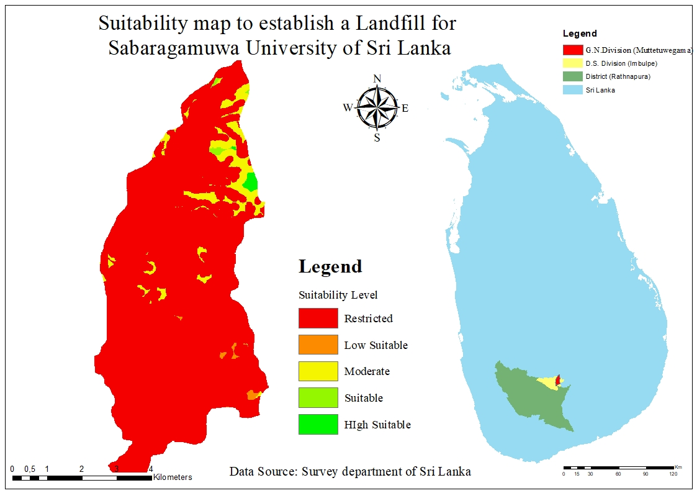
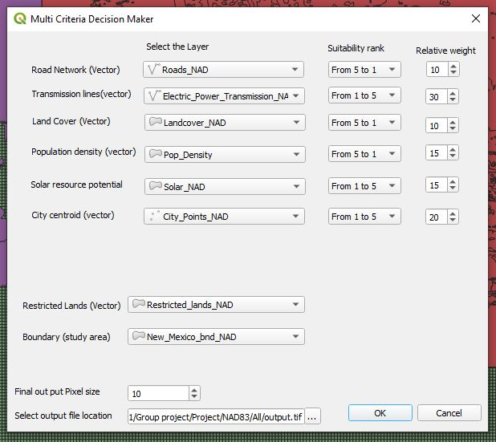
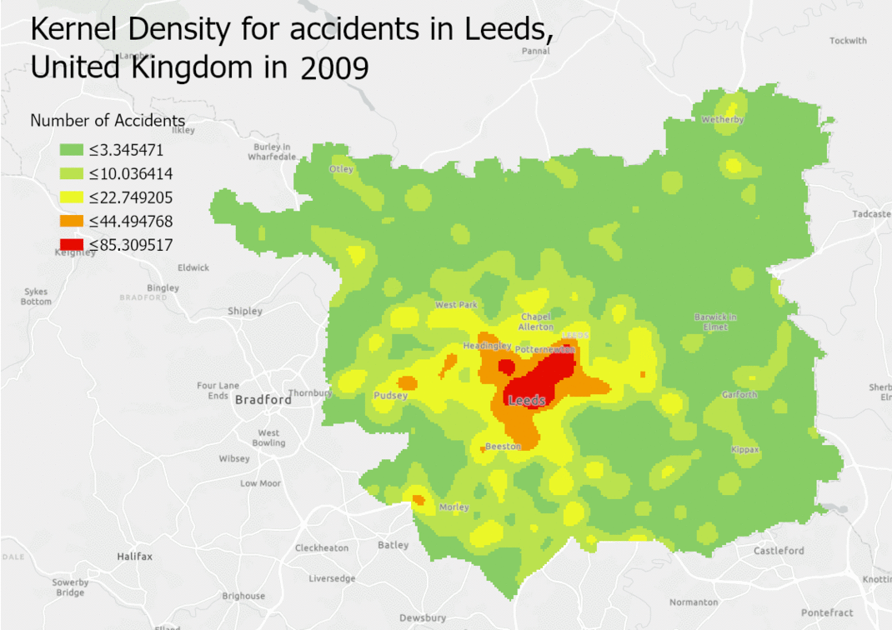
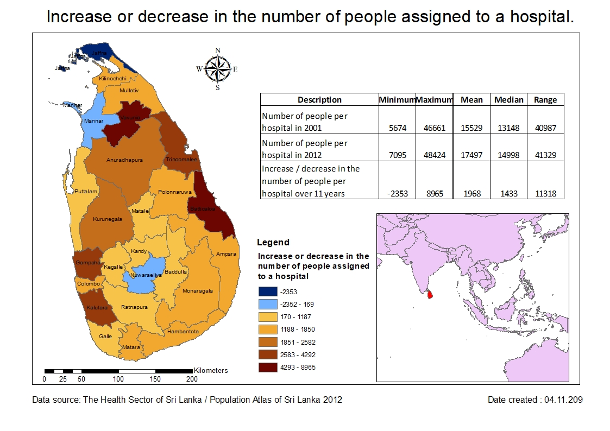
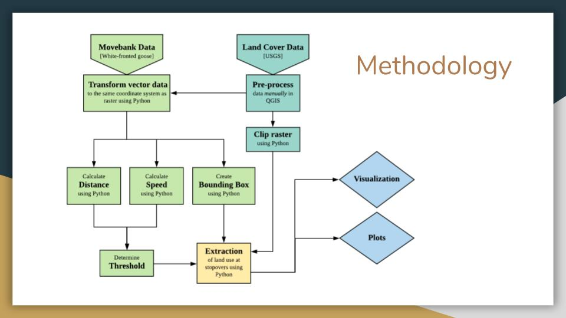
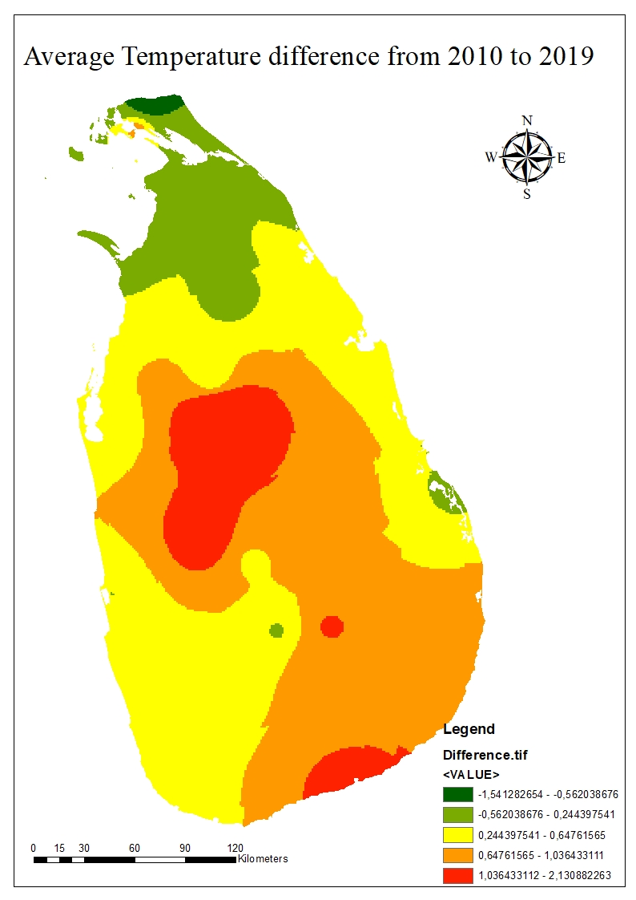

Integrate GIS and multi-criteria decision making (MCDM) to find a suitable place to establish a
landfill at Sabaragamuwa University in Sri Lanka
Sabaragamuwa University in Sri Lanka (SUSL) is located in a rural area
160 km away from the capital, and the city council does not implement proper waste collection
methods. Therefore, the university collects all types of waste at once and disposes it in an
open dump. Then, when the dump is full of waste including glass and polythene, it burns out.
This poor solid waste management practice causes air pollution, and the leachate produced in
the dump pollutes the groundwater surface of the area. A suitable solid waste system is therefore
a high priority requirement for Sabaragamuwa University in Sri Lanka. Geographical information
systems (GIS) is an important tool because it not only reduces time and cost of the site selection
but also provides a digital data storage for long term management and planning. The main objective
of this study is use GIS and Multi Criteria Decision Analysis (MCDA) to create a map that shows
the right location, establish a landfill to improve waste management, and evaluate the factors
needed to select the right landfill. Finally, this study focuses on performing sensitivity analysis
to study output model uncertainty.

Automation of multicriteria evaluation for solar farm siting using open source software
Together, multicriteria evaluation (MCE) and geographic information
systems (GIS) are usually concerned with allocating favorable lands to a particular purpose.
This can be achieved by scoring and assigning weights to attributes of interest to decide
whether certain areas are suitable or unsuitable for a particular activity. The objective of
this study is to automate the preprocessing steps used for multicriteria evaluation that
determines site suitability of solar farms using a GIS, allowing user input derived from
Analytical Hierarchy Process (AHP)
If you're curious about this project, head to my Github page.

Space-time Crash Analysis- for accident in Leeds, United Kingdom
Leeds is an urban
area located in the metropolitan county of West Yorkshire, United Kingdom. The population of Leeds
as of 2019 rests around 818,085 inhabitants and it is recognized as the fifth-largest city in the United Kingdom with a population density of
around 1,416 people per square kilometer. Leeds transportation networks have a prominent reputation in the United Kingdom,as the railway station
is one of the busiest in Britain. Despite that According to the Leeds City Council ,
the urban area averages around 2,000 to 3,000 vehicle accidents per year between 2009 and 2018. Though the overall number of road casualties has
fallen over the last few consecutive years, Leeds City Council reports the number of people killed or seriously injured has risen 4%, hence
the figure is still unavoidable. Therefore, identifying areas with the highest concentration of accidents would be advantageous for minimizing
road accidents related issues and taking proper initiatives for future traffic safety planning, not only for Leeds but for other geographic
regions as well. Therefore, this project was developed as a contribution to solving the above issues to identify highly vulnerable accident
hotspots using geospatial technology. Click here to view
the final product story map available through ArcGIS Online.

Examine the distribution of hospitals in Sri Lanka against the population
Spatial analysis of Geographical information has a wide range of
applications in our society today since,
“Almost everything that happens, happens somewhere (Longley, P.A. et al, 2005, p. 4)
on the surface of the earth or near surfaces. These applications of geographic information
systems play a major role in the field of health sciences and have a variety of uses ranging
from in-house bed management to global health risk assessment. In this exercise, examine the
distribution of hospitals in Sri Lanka against the population. The final results and the visualizations of the study can be found here

Examine the migratory patterns of white-fronted goose in northern Europe
Research question: Which land-use types are the white-fronted geese utilizing
for stopovers during their migratory routes?”
The medium-sized, heavy-bodied white-fronted goose, Anser albifrons, has brown and white feathers with
orange beaks and feet and can geographically be found residing across Europe and northern Asia
(Cornell University, 2019). This species is known to breed in the arctic and Siberia of Russia during
the warmer season in areas of wetlands, ponds and rivers, and winter in agricultural, wetland areas,
as well as marshes of Europe (Cornell University, 2019). Nonetheless, at this moment in time,
the white-fronted goose possesses a stable population and is considered a least concern for extinction (Ely et al., 2020; Schellinger, 2014).
Although research has been performed on the preferred land-use for these geese (Schellinger, 2014; Cornell
University, 2019), the proportions of each land-use utilized by white-fronted geese for wintering,
migratory stopovers and breeding together has not been explicitly stated.
The aim for the research is to determine the habitat most favorable to white-fronted geese throughout
heir seasonal movements across Europe and northern Asia by proportion. The research objectives aim to
determine the preferred habitats proportionally by extracting the land use type (USGS, 1992) of
stopovers from movement data of a white-fronted geese sample population collected between 2007
and 2008 (Wilkelski, 2020) and plotting them by speed and distance thresholds.
If you're curious about this project, head to my
Github page for more information
and download a detailed documentation here

Geostatistical exploration of surface temperature variation in Sri Lanka from 2010 to 2019
Comfortable temperature is a key factor for a human beings healthy living. Unfortunately, some
people often suffer from living in areas of elevated temperature without any escape. Urbanization can
have a profound effect on a country’s microclimate due to deforestation, industrial activities, air
pollution from fossil fuel use, multi-story buildings and more. Sri Lanka, a developing country situated
in South Asia, faces weighty issues such as scarcity of land for its ever-growing population, as well as
its recent developments. The Sri Lankan government introduced a national initiative for development
in transportation and tourism that began in 2011. Some government plans include building 1000
kilometers of highways around the island, as well as six metro regions before the end of 2030. The
World Bank has given focus to Sri Lanka to help invest in urbanizing their country to transform their
economy, in their efforts to end extreme global poverty and boost shared prosperity (World Bank
Group, 2015).
Although the goal for these development plans are economic growth and to move people out of
poverty (Clottes, 2014), these unprecedented developments could directly affect the natural
ecosystem of the country, leading to change in temperature and precipitation patterns. There is much
evidence that the urbanization effect can have partial responsibility for causing urban heat islands
(UHI) like cases in southeast China where rapid urbanization has occurred (Zhou, 2004). Since Sri Lanka
has seen rapid economic and urban growth since 2011, this study aims to evaluate surface
temperature changes in Sri Lanka from 2010 to 2019. Although the ten-year period is not enough to
determine an urbanization effect, the analysis will provide insight on potential surface temperature
trends.